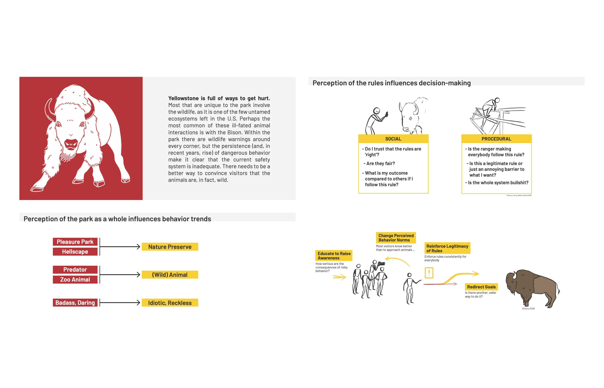

about me
Field Studio
field studio with Yellowstone National Park + Yellowstone Forever

![Portfolio page: a red poster reading “We Don’t Train the Bison” with a charging white bison and “Getting Yellowstone visitors to keep themselves safe.” Beside it: “Yellowstone is full of ways to get hurt. Hundreds of people have died and thousands have been injured since the park’s founding in 1872. So many natural features of the park are not found anywhere else in the world — even people who are familiar with outdoor recreation may be at risk from the unique dangers of the park. The continuous incidents of dangerous behavior make it clear that the current methods of providing warning are inadequate.” Four photos of existing park warning signs and a crowd of visitors, and: “The existing rules and guidelines are actually very effective. The challenge is in getting visitors to remember and actually follow them.”](../assets/img/yellowstone/page-10.webp)
![Portfolio page: “Information considered in behavioral decisions vary by person despite the process staying relatively the same. Where do we intervene to help people make better choices?” A diagram of a visitor between a group and a bison showing group awareness, education, influence, desire and tension; How to Change Behavior: educate to raise awareness, change perceived behavior norms, reinforce legitimacy of rules, redirect goals; and Methods: repetition, simplicity, accessibility, attraction, demonstration, and caution, not fear.](../assets/img/yellowstone/page-11.webp)